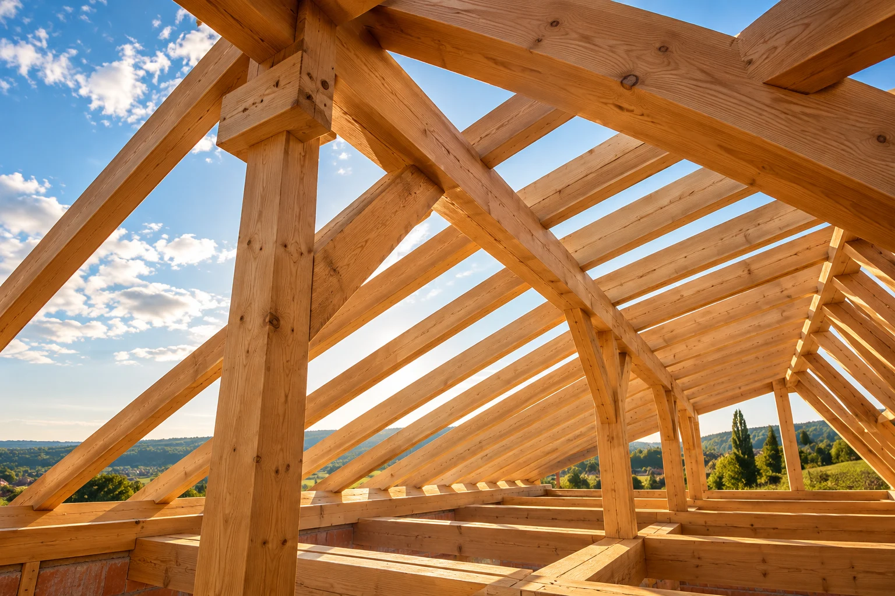
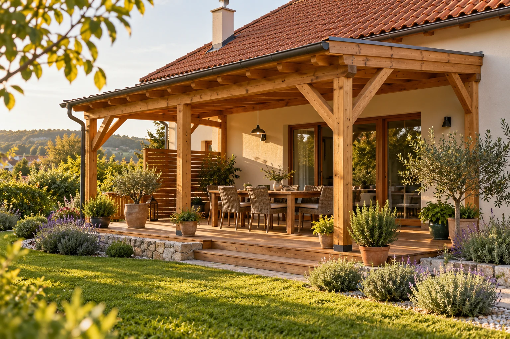

BOKRODI JÁNOS · ÁCS VÁLLALKOZÓ
Fából építve.
Otthonra
tervezve.
Tetőfedés és ácsmunkák, kerti kiülők és fa kocsibeállók. Átgondolt részletek, az Ön elképzeléséhez és otthonához igazítva.

LÁTVÁNYILLUSZTRÁCIÓ · AIA MEGVALÓSÍTÁSIG
AMIBEN SEGÍTHETEK
A jó munka
jó alapokkal kezdődik.
Egy új tetőtől a kedvenc kerti pihenőhelyig.
Négy szolgáltatás, az Ön terveihez igazítva.
 01AI-ILLUSZTRÁCIÓ
01AI-ILLUSZTRÁCIÓTetőfedés
Gondosan kialakított fedés az otthona fölé.
Részletek ↗ 02AI-ILLUSZTRÁCIÓ
02AI-ILLUSZTRÁCIÓMinden ácsmunka
Új és megújuló faszerkezetek, méretre igazítva.
Részletek ↗ 03AI-ILLUSZTRÁCIÓ
03AI-ILLUSZTRÁCIÓKerti kiülők készítése
Saját pihenőhely a kertben, fából megformálva.
Részletek ↗ 04AI-ILLUSZTRÁCIÓ
04AI-ILLUSZTRÁCIÓKocsibeálló készítése
Fedett hely az autónak, a házhoz illő arányokkal.
Részletek ↗
AI-LÁTVÁNYKÉPBOKRODI JÁNOS · BEMUTATKOZÓ TERV
A fa természetes.
A jó megoldás
személyre szabott.
Minden ház és minden elképzelés más. A közös munka egy beszélgetéssel kezdődik: mit szeretne, mire van szüksége, és hogyan használja majd az elkészült szerkezetet?
A bemutatkozás végleges szövegét János történetével és szakmai tapasztalatával tesszük majd személyessé.
Ismerje meg a lehetőségeket ↗ANYAG. FORMA. OTTHON.
Nézze meg,
milyen lehet.
Hangulatképek az oldal arculatához.
A végleges galériába saját munkafotók kerülnek.
KAPCSOLÓDJUNK
A bizalom
személyes.
Ügyfélvélemények és a munkák hétköznapjai — egy helyen.
Profilok bekötése előkészítveValódi munkák.
Valódi visszajelzések.
Itt jelennek majd meg Bokrodi János Google Cégprofiljához tartozó, ellenőrzött ügyfélértékelések.
Bemutatóhely — még nincs bekötött profil vagy közzétett értékelés.
Profil megnyitása ↗KÖZEL AZ OTTHONÁHOZ
Itt számíthat
ránk.
16 kiválasztott helyszín Fejérben, Pest vármegyében és Budapesten.
Válasszon helyszínt az ajánlatkéréshez.
A kiszállás és a vállalás egyeztetéshez kötött.
Térképadatok: geoBoundaries
SZOLGÁLTATÁSI TERÜLET
Hol valósulna meg
az elképzelése?
A lista a vállalt helyszíneket mutatja. A térképpel térségre szűrhet.
Nincs ilyen találat. Törölje a keresést vagy válasszon másik térséget.
Ide kérek ajánlatot ↗A KÖVETKEZŐ LÉPÉS
Van egy terve?
Adjunk neki formát.
Írja meg a helyszínt és az elképzelését.
A részleteket személyesen egyeztetjük.